Wächter gegen Brecher
12 Kleinanimationen, je 60 Frames bei 10 Bildern pro Sekunde. Ablauf vorwärts, der Log war rückwärts notiert.
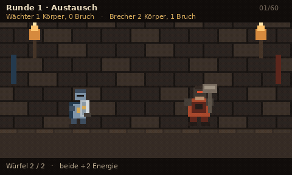
Runde 1 · Austausch. 1 Körper gegen 2 Körper, 1 Bruch.
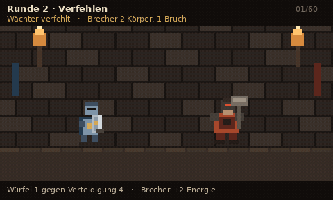
Runde 2 · Wächter verfehlt. Brecher 2 Körper, 1 Bruch.
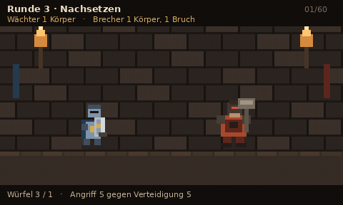
Runde 3 · Nachsetzen. 1 Körper gegen 1 Körper, 1 Bruch.
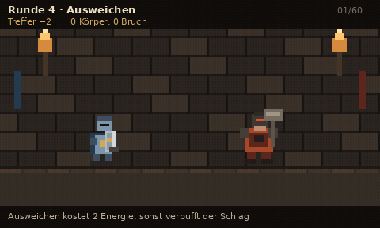
Runde 4 · Ausweichen. Treffer −2, 0 Körper, 0 Bruch.
Runde 5 · Wächter verfehlt. Brecher 1 Körper.
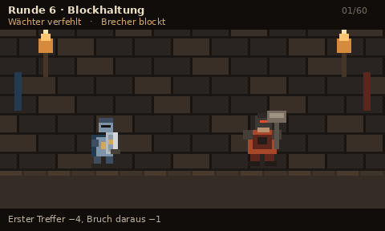
Runde 6 · Verfehlen und Blockhaltung. Erster Treffer −4.
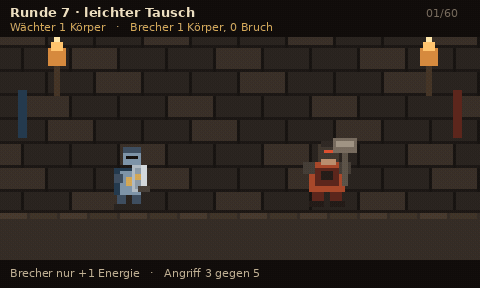
Runde 7 · leichter Tausch. 1 Körper gegen 1 Körper.
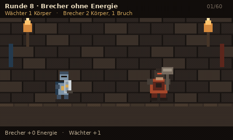
Runde 8 · Brecher +0 Energie, trifft trotzdem für 2 Körper, 1 Bruch.
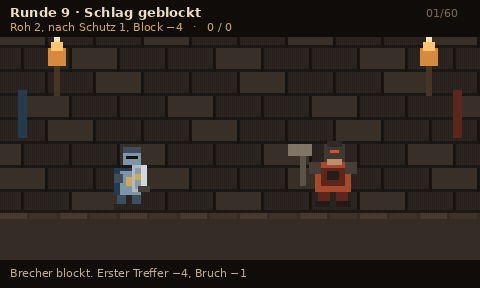
Runde 9 · Schlag geblockt. Block −4, 0 / 0.
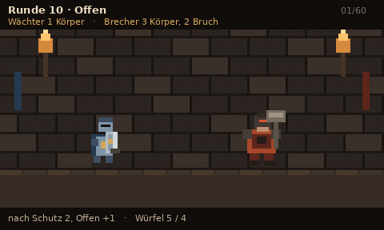
Runde 10 · Offen +1. Brecher 3 Körper, 2 Bruch.
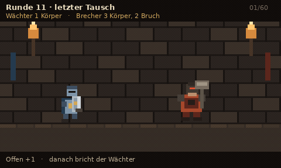
Runde 11 · letzter Tausch, danach kippt der Wächter.
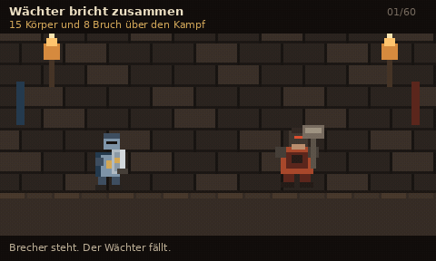
Wächter bricht zusammen. 15 Körper, 8 Bruch im ganzen Kampf.